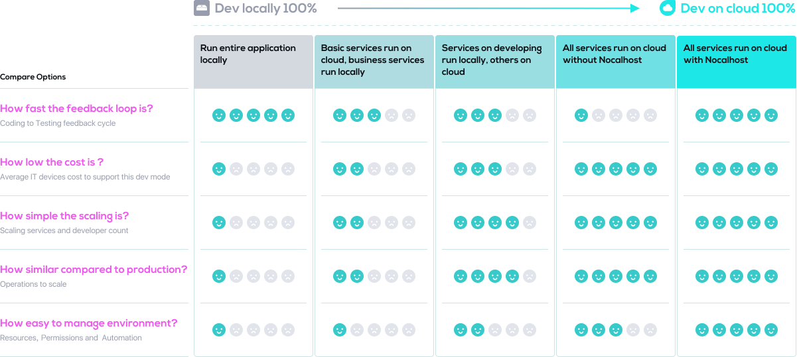

GitHub
GitHubNocalhost 是什么?
Nocalhost 概览
点击观看产品介绍
是一个
连通云端和本地 IDE 的桥梁
代码更改可以实时从 IDE 同步到云端，秒级查看结果，避免镜像提交、推送或拉取等操作。
是一个
可以共享的开发空间
开发人员可以在团队中共享相同的开发环境，享受高效的团队协作。
是一个
Kubernetes 的扩展工具集
Nocalhost 可以帮助开发人员更轻松、快速地构建 Kubernetes 应用。
是一个
照亮微服务开发的聚光灯
开发者可以通过 Nocalhost 直接开发和调试复杂框架下的远程微服务。
Nocalhost 是一款新的云原生开发工具
Localhost开发模式
所有服务运行在本地，开发者之间的开发环境互不干扰。

- 受限于本地电脑性能，难以开发大型微服务应用
- 搭建和维护开发环境困难
- 联调繁琐
- 开发环境与生产环境差异较大
Nocalhost开发模式
Nocalhost 可以为任何 Kubernetes 集群赋能，并将其升级为开发人员的协作开发环境。

- 云端弹性资源可支撑大规模微服务应用开发和部署
- 开发环境可以动态按需准备
- 云端共享环境，方便联调开发
- 与生产环境差异很小
为什么要使用 Nocalhost？
探索本地开发和云端开发之间的区别。

谁在使用 Nocalhost?
荔枝微课
荔枝微课是一个致力于公共知识共享的平台，整个平台所有功能终身免费。 在这里，每个人都可以随时随地开始和分享课程，或者听课和学习。 研发团队在使用 Nocalhost 进行基础设施组件的开发后，效率有了显著的提升

红亚科技
红亚科技是一家为信息技术相关专业提供优质服务的科技公司。 其业务包括教学产品和校企合作。 研发团队使用 Nocalhost 后提升企业研发效率（青椒课堂）。

更美
更美App是整形交流社区、医美电商平台、整形医生口碑数据库。 业务覆盖中国、韩国、泰国、新加坡等。研发团队通过使用 Nocalhost 进行微服务的开发，有效提升业务的研发效率。
小影科技
小影科技总部位于杭州，成立于 2012 年 6 月，是一家专注于移动视频创作工具和服务的互联网公司。研发团队在 K8s 下的机器学习项目中使用 Nocalhost，提升研发效率。